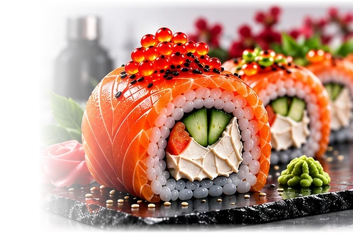

Технологические карты
Создание, черновики и библиотека ТТК
Каталог продуктов
Единая база для рецептур и полуфабрикатов
PDF и печать
Фирменные технологические карты формата А4
Студия и настройки
Проекты, облако, доступ и обновления
—
—
—
—